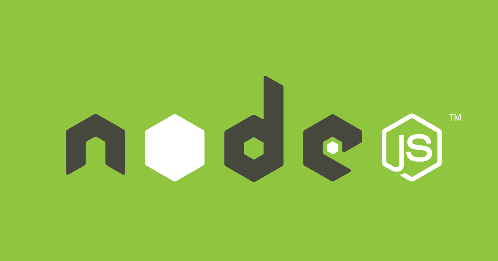

First, of course, you need a Github account
- Login to your Github, add a repository.
- Name your repository as yourusername.github.io
- CREATE
- In the repository’s setting page, change “Github Page” like this
- Apply
Install Hexo
- You need Node.js, download (Linux, Windows, OSX…) and install it.
- Select a folder where you want to install your Hexo in, then open Terminal (or “Git Bash Here” in Windows) in this folder.
- Run following commands to set up Hexo:
1 | npm i -g hexo-cli #install Hexo |
1 | npm install #install some dependencies |
1 | hexo init #init Hexo |
So, now, the environment has been built, we should edit the _config.yml to make the site special.
EXAMPLE:
1 | # Hexo Configuration |
- (Put your own themes in the
theme\, and change the _config.yml liketheme: yourthemename) - (Change the
repository: https://github.com/theodorecooper/theodorecooper.github.ioto your repository’s name!!!) - And now, we should build the site.
Build & Preview & Upload
1 | hexo g #build site |
1 | hexo s #run the server at https://localhost:4000, Ctrl+C to stop |
1 | npm install hexo-deployer-git #install hexo-deployer-git |
1 | hexo d #upload to your Github Page |
- Access
https://yourusername.github.io(your domain) , upload successfully?
Write & Post
1 | hexo new 'article_title' #create a 'article_title.md' in source/_post, you can write in this markdown file. |
- After editing the file, you should upload it
1 | hexo g |
1 | hexo s |